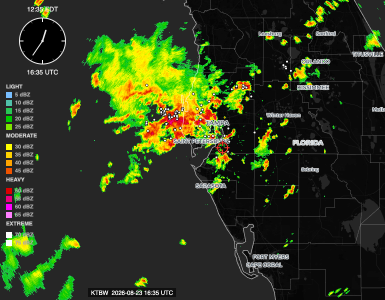

Lightning Activity Layer
Real flash detections from NOAA's GOES-19 satellite, rendered as part of the radar loop itself — on by default, showing where lightning actually happened as each frame plays.
What's new
RadEcho now shows real lightning activity directly on the radar loop. Every white dot is a real flash, detected by NOAA's GOES-19 satellite and placed at its actual location for the exact scan it belongs to. Show Lightning Activity ships checked in the legend — it's the one non-radar layer on by default, since lightning is part of the storm itself rather than a separate thing to opt into.

How it's shown
Flashes are tied to each individual frame's own scan window, not a running live feed — as you step or animate through frames, the dots flash in and out the way the lightning actually did at that point in the storm, rather than accumulating into a static cloud of every strike from the whole loop. The newest frame always reflects the most current data available; older frames show exactly what happened during that specific scan.
Why this is useful
Lightning activity is one of the clearest signs of how a storm is actually behaving — where it's strengthening, whether a cell is still electrically active, and how activity is distributed across a complex of storms. Watching flashes appear alongside reflectivity gives a fuller picture than reflectivity alone, especially for judging which part of a storm is currently the most active.
Being honest about what this data is
GOES-19's instrument detects total lightning — in-cloud and cloud-to-ground flashes combined, with no way to tell which is which. That's a different product from a cloud-to-ground-only strike map. It also means flashes can appear somewhat beyond the strongest reflectivity core: in-cloud lightning genuinely extends into the surrounding cloud, including areas of lighter precipitation, so a flash sitting outside the brightest colors on the map isn't a positioning error.
There's no polarity or peak-current information — just where and when a flash happened. And this depends on NOAA's satellite feed being available; if it isn't, the layer says so explicitly rather than silently showing nothing and letting an outage look like a quiet sky.
Comments
Sign in with GitHub to comment. Threads live in this repository's Discussions.